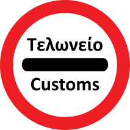

Loading...

Stop — Customs
🚫 Regulatory Signs
📖 Description
This sign requires all vehicles to stop for customs inspection. Drivers must wait until customs officers authorize them to proceed. It is typically placed at border crossings or controlled entry points.